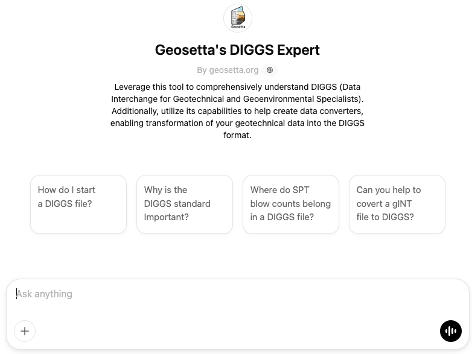

Note: This work was completed as part of the Vendor Support portion of the ASCE Geo-Institute Technical Committee Special Project Fund.
The 2025 DIGGS Code Jam was an incredible event that brought together geotechnical engineers, data scientists, and software developers to collaborate on advancing the DIGGS standard. One critical challenge we identified during the planning stages was the need for robust validation tools—without them, participants would struggle to create compliant DIGGS files, severely limiting what we could accomplish.
In response, we developed a comprehensive validation framework that's now freely available at Geosetta. This toolset was instrumental to the Code Jam's success and now serves the broader geotechnical community by ensuring data integrity, standard compliance, and interoperability across systems.
Early in our Code Jam planning, we realized a fundamental challenge: how could participants collaborate effectively if they couldn't validate their DIGGS implementations? Imagine dozens of engineers working intensely for two days, only to discover at the end that their files were incompatible due to simple structural errors or terminology inconsistencies.
Have you ever shared geotechnical data with a colleague only to hear "I can't open this file" or "The values don't make sense"? These common frustrations stem from inconsistent data formatting and structure. Our validation framework tackles these issues by checking your DIGGS files at three increasingly sophisticated levels, and it proved essential to the Code Jam's success.
Think of our validation process like quality control for building a house:
This first level ensures your DIGGS files have a solid structural foundation:
Real-world example: Let's look at a snippet from a piezometer data file:
<!-- Valid XML structure -->
<reading>
<Reading gml:id="Reading_Water_Levels_PZ-B-03-23">
<responseZoneLocation xlink:href="#rzl"/>
<outcome>
<MonitorResult gml:id="Result_Water_Levels_PZ-B-03-23">
<!-- Properly structured content -->
</MonitorResult>
</outcome>
</Reading>
</reading>
<!-- Invalid XML structure -->
<reading>
<Reading gml:id="Reading_Water_Levels_PZ-B-03-23">
<responseZoneLocation xlink:href="#rzl"/>
<outcome>
<MonitorResult>
<!-- Missing required gml:id attribute -->
</monitorresult> <!-- Incorrect closing tag capitalization -->
</outcome>
</Reading>
</reading>Our validator immediately flags the second example, pointing out the missing attribute and incorrect tag closure.These simple errors will prevent software from reading your data, and without an XML structure validator, they can be extremely difficult to find!
Once the structure is sound, this level ensures everyone's using the same terminology:
Real-world Measurment While Drilling (MWD) example:
<!-- Valid codelist reference -->
<Property index="10" gml:id="prop10">
<propertyName>Gear</propertyName>
<typeData>double</typeData>
<propertyClass codeSpace="http://diggsml.org/def/codes/DIGGS/0.1/mwd_properties.xml">gear_number</propertyClass>
</Property>
<!-- Invalid codelist reference -->
<Property index="10" gml:id="prop10">
<propertyName>Gear</propertyName>
<typeData>double</typeData>
<propertyClass codeSpace="http://diggsml.org/def/codes/DIGGS/0.1/mwd_properties.xml">gear_num</propertyClass>
</Property>The second example accidently used "gear_num" instead of the standardized "gear_number" term. Our validator flags this inconsistency, helping ensure that when you share your data, other systems will correctly interpret what your data elements.
The last validation level enforces relationships between different parts of your data:
Real-world example:
<!-- Valid relationships -->
<timePositionList>2024-11-05T13:00:01 2024-11-05T12:30:01</timePositionList>
<dataValues>23.683,774.183,56.973 23.644,774.144,57.012</dataValues>
<!-- Invalid relationships -->
<timePositionList>2024-11-05T13:00:01 2024-11-05T12:30:01</timePositionList>
<dataValues>23.683,774.183,56.973</dataValues>In the second example, there are two timestamps but only one set of measurements. Our Schematron validator can flag this mismatch, ensuring internal consistency in your data.
Ever wished you had a DIGGS expert on call 24/7? Our LLM Assistant can help bridge the gap:
When the validator flags an issue, you can ask our DIGGS Expert LLM Assistant for help. For example:
User question:
"My DIGGS file failed the codelist validation here:<Property index="1" gml:id="prop1_Water_Levels_PZ-B-03-23"> <propertyName>Pressure (ft H₂O)</propertyName> <propertyClass codeSpace="https://diggsml.org/def/codes/DIGGS/0.1/properties.xml">water_pressure</propertyClass> <uom>ft</uom> </Property>Can you help me fix it?"
AI Assistant:
"I notice you're usingwater_pressureas your propertyClass, but this isn't a standard term in the DIGGS codelist. For piezometer pressure readings, you should usewater_depthinstead. Simply change your propertyClass value to:<propertyClass codeSpace="https://diggsml.org/def/codes/DIGGS/0.1/properties.xml">water_depth</propertyClass>This will ensure your file complies with the standard terminology used across DIGGS implementations."
You can also ask more fundamental questions like "How do I start a DIGGS file?" and the assistant will guide you through the process step by step.
This contextual guidance helps you not just identify problems but understand and fix them.
While developing our validation framework for the Code Jam, we drew inspiration from the pioneering work of pydiggs. Created as an open-source Python library, pydiggs laid the groundwork for programmatic validation of DIGGS files and demonstrated the value of automated checking tools for the community.
Our validation framework builds upon these foundations, expanding the capabilities with more comprehensive validation and adding the LLM-powered assistant to help users interpret and fix validation issues. We're grateful to the pydiggs team for their contributions that helped make DIGGS validation accessible to developers and set the stage for our current tools.
Let's follow the validation journey of Susan, a geotechnical engineer trying to share piezometer data with a colleague:
Susan's colleague receives a fully compliant DIGGS file that opens correctly in their software and contains consistently formatted, interpretable data. No frustrating back-and-forth emails needed!
By providing these validation tools freely through Geosetta.org, we're ensuring that geotechnical data meets required compliance levels. This framework:
Ready to validate your DIGGS files? Visit Geosetta's DIGGS Tools to access our validation framework. Upload your file, and the system will guide you through all three validation levels with clear, actionable feedback.
The validation framework we built for the 2025 DIGGS Code Jam has taken on a life of its own. What started as a necessity for a short event has become a valuable resource for the entire geotechnical community. We've seen organizations adopt these tools in their daily workflows, dramatically reducing the time spent troubleshooting data exchange issues.
In upcoming posts, we'll share success stories from the Code Jam showing how teams leveraged these validators to create innovative DIGGS implementations in record time.
Did you participate in the 2025 DIGGS Code Jam? Have you tried our validation tools yet? What geotechnical data challenges are you facing? We would love to hear from you!